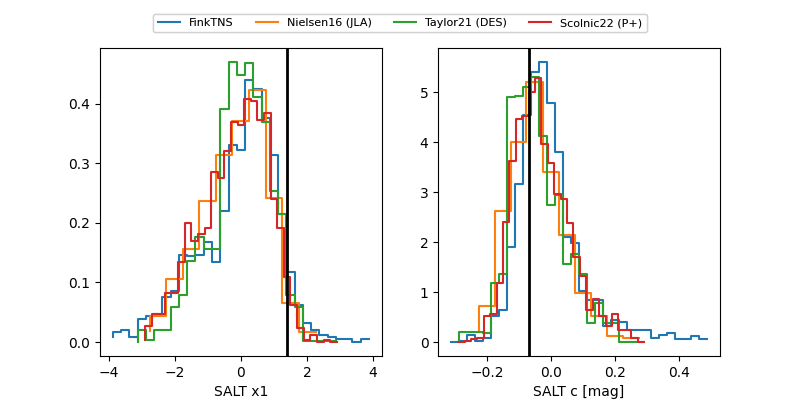

FINK: ZTF25abpgjdk
Lasair: ZTF25abpgjdk
ALeRCE: ZTF25abpgjdk
TNS: 2025xbl
YSE: 2025xbl
ZTF25abpgjdk (ztf,fink)
2025xbl (tns,yse)
ATLAS25leg (atlas)
equatorial (ra, dec) = (268.8734,+43.82572)
galactic (l, b) = (70.4115,+28.09507)

last atlasc=18.28, atlaso=18.77, ztfg=18.47, ztfr=18.56
2 atlasc, 5 atlaso, 6 ztfg, 8 ztfr detections